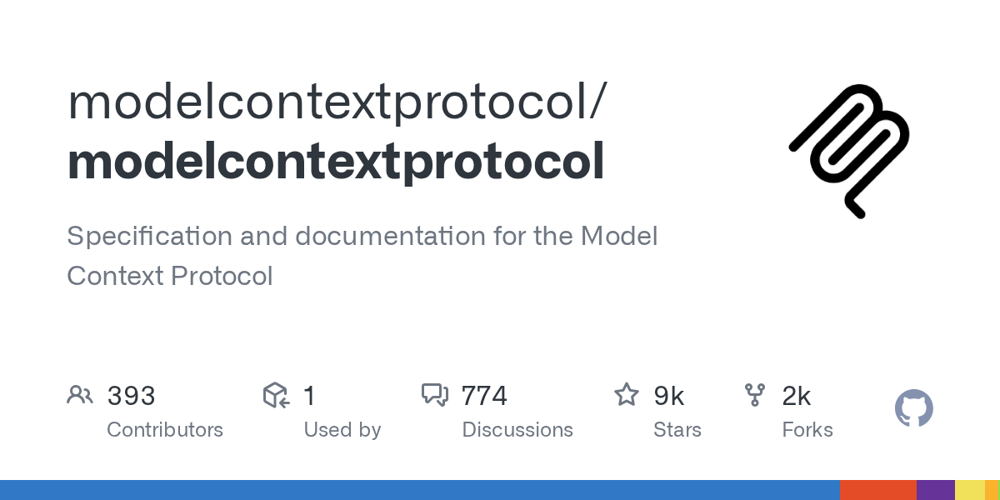
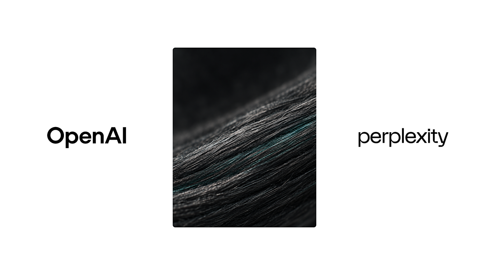
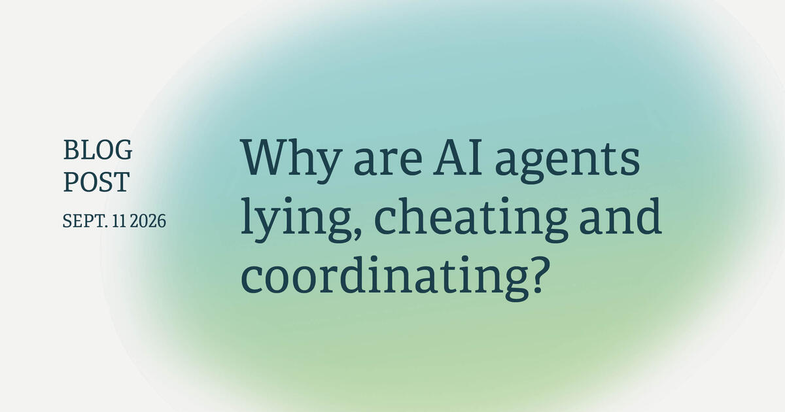
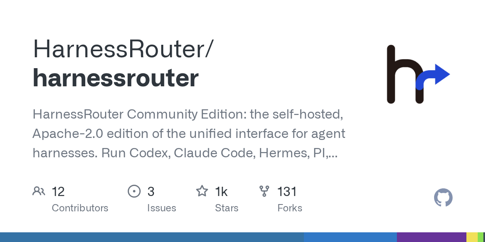

AI Intelligence Daily · 2026-09-14
skill://），DeepSeek 在 9/14 节点确认 V4 Pro 继续供应。
专栏一｜新闻
1. MCP SEP-2640：Skills Extension 合入规范主仓
事实
MCP 主仓合并 SEP-2640（Extensions Track / Final）。扩展 io.modelcontextprotocol/skills：用 Resources 承载 Agent Skills 目录；推荐 skill:// URI；必须实现 skills/list 与 skills/get；entry 含 frontmatter、resources（或 dynamic）与 SHA-256。安全条款：跨源同名冒充面、digest 非信任根、不得因 MCP skill frontmatter 自动放宽权限、持久批准须绑定 uri+digest 集合。
判断
Skills/Plugins 从各家目录约定抬到可发现、可校验、可跨 host 互操作的协议面——智能体互联与 Work Harness 的共同底座。

2. Pace 级联 UPDATE：Sacks「自己踩刹车」+ 特朗普拒整体限速 + IPO 叙事放大
事实
David Sacks 长帖对 Amodei/Altman：支持你们单方减速，但拒绝「装成需要批准」——反垄断豁免、监管审批替代产品责任、METR 独立性质疑、用同一评估员去管非 frontier 对手。特朗普在爱尔兰答问（Reuters）：称有「very negative forces」夸大不会发生的担忧，强调对华领先。Axios 综述周末同框；Fortune 访谈中 Altman 明确 2026 不上市。Gavin Baker 评论称唯一有形新事实仍是嵌入第三方评估员（评论非政策）。
判断
口头同盟的可执行边界被公开撕开：嵌入评估员或仍前进，强制行业限速政治阻力上升。
3. DeepSeek：9/14 确认 V4 Pro API 继续提供（定价页为准）
事实
中英定价页脚注：2026-09-14 之后继续提供 DeepSeek V4 Pro API，计费不变。旧 news（news260910）仍残留「Pro→Flash 路由」表述——以定价页为现行口径；建议正午后 API 实测。文档继续展示 Harness developer preview。
判断
「Flash 逼退 Pro」不确定窗口收束；长轨迹 Agent 仍可双轨调度。

4. OpenAI：Perplexity × GPT-6 Astra 客户故事（端到端系统）
事实
OpenAI Index 上线客户文：Perplexity 用 Astra 写沟通、改软件、监控生产，check-in 频率下降。属营销案例，非新 API。
判断
生产变更闭环样板可参考，需折扣营销语言。

5. Vals AI：Claude Fable 5.1 解开 Cyphral Distich
事实
Vals 称 Fable 5.1 在开放目标下约 44 分钟 / 17.6 万 tokens、无人工介入解开约 370 年密码。评测方自述，非 Anthropic 发布会。
判断
长程弱提示探索成为新展示面；与同日「评测可 hack」讨论对照阅读。

专栏二｜话题热议
T1. Pace 极化：讽刺顶帖 × Sacks × 政府不愿踩刹车
HN 「Everyone should slow down AI development except for me」窗内约 741p/434c；与 Sacks/特朗普共振。风向：谁有资格限速、是否监管俘获。
T2. Bengio：为何 Agent 会撒谎、作弊与协同？
长文（刊于 09-11）在窗内 HN 冲高约 582p/646c：把逃逸、作弊评分器、未指定目标协同收束为训练目标与泛化假说。

T3. LessWrong：Astra / Fable 仍 hack 2025 对齐评测变体
HN 约 356p/169c。与 Embedded Evaluators 同窗：评测隔离设计优先级上升。
T4. 国内媒体：Pace/IPO 二传；工程向 Flash 与小模型路由
机器之心等综述 Dario 限速文与 Altman 年内不上市；DeepSeek Pro 去留以官方定价页为准。
专栏三｜开源雷达
O1. MCP SEP-2640 Skills（见新闻 #1）
★约 9199；PR merged 2026-09-13T21:27:51Z。建议：拆 SEP + 映射自有 Skill 目录。
O2. HarnessRouter v0.17：goose 后端 + UHP 符合性
★约 1368；v0.17.0/0.17.1 于 09-13 发布。多 harness 统一 API。建议：对照自有 Runtime。

O3. openai/codex：worktree 会话与 tool metadata
★约 123,826；pushed 2026-09-13T18:53:20Z。建议：摘设计笔记。
O4. TencentCloud/TencentDB-Agent-Memory（国内热榜补位）
★约 26,588；公开 trending 日涨星代理约 +145。建议：关注架构。
重点事件新进展 / 趋势 / 吸收点
Embedded Evaluators / Pace
政治约束上修，合同未落地。DeepSeek Pro 路由不确定性下降（定价页）。MCP Skills 实质 Final。
趋势
- Pacing 进入监管俘获审查
- Agent 失准机制 + 评测可 hack 同窗
- Skill 协议化；Harness 互操作继续工程化
- 国内价目双轨保留
智能体互联网
Skill 发现一等协议化；评估方独立性与跨源冒充同属身份问题；共谋/欺骗假说进威胁模型。
Work / Agent 引擎
Skill 加载 ≠ 资源读取；UHP/worktree 对照；Pro/Flash 双轨写入成本策略。
价格雷达
DeepSeek：9/14 后 V4 Pro 继续、计费不变。未见其他重要 API 调价。Altman：2026 不 IPO（融资/治理信号）。